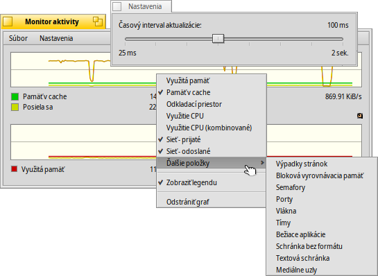

Monitor aktivity
Monitor aktivity
| Panel: | ||
| Umiestnenie: | /boot/system/apps/ActivityMonitor | |
| Nastavenia: | ~/config/settings/ActivityMonitor settings |
You can track system resources by launching the ActivityMonitor and activating different items of interest.
Kliknutím pravého tlačidla myši na okno môžete pridať všetky druhy zdrojov:
Využitú pamäť, Vyrovnávaciu pamäť, Odkladací priestor, Využitie CPU, Sieť - prijaté/odoslané, Výpadky stránok, Semafory, Porty, Vlákna, Tímy, Bežiace aplikácie, Schránka bez formátu, Textová schránka, Mediálne uzly.
Pod grafom sa nachádza legenda (ktorá sa dá schovať pomocou kontextového menu). Môžete meniť farby grafov a pozadia okna pomocou akéhokoľvek výberu farby, napr. v Icon-O-Matic. Farbu jednoducho pretiahnite do grafu myšou.
Viac náhľadov môžete pridať v menu v prípade, že by grafy boli preplnené.
Menu otvorí panel na nastavenie časového intervalu aktualizácie.
Každý náhľad má svoju vlastnú rúčku Replikanta, teda môže byť umiestený napríklad na Desktop.